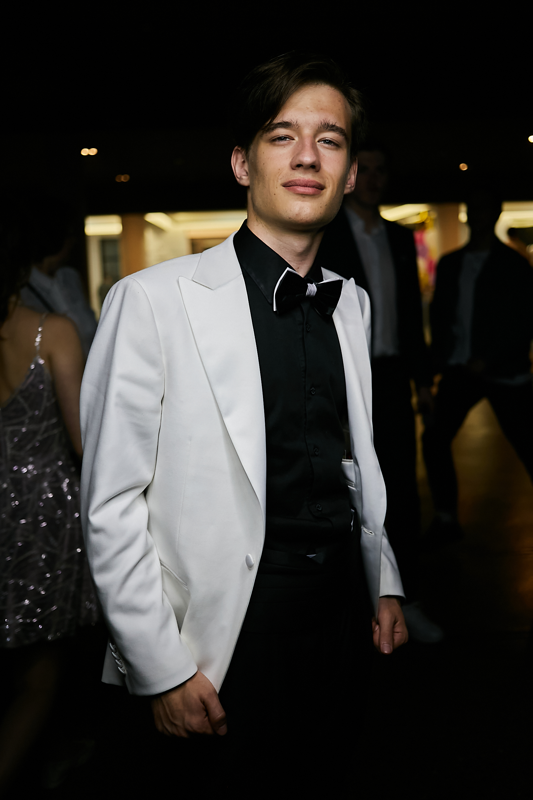

Разрабатываем игры, пишем музыку, создаем проекты Живем лучшую жизнь!
Учусь на бизнес-аналитика, но душой всегда в ритме — будь то стук барабанных палочек или энергия студенческих проектов. Преподаю в технопарке и заряжаюсь, когда вижу, как у студентов "загораются" глаза от первой работающей программы. А ещё меняю жизнь университета через студсовет и уже собираю команду для своего проекта — того самого, что изменит правила игры.

Знаешь, что общего у гоночного трека, звёздного неба и строки кода? Когда-то я оставлял соперников за спиной на картинговой трассе, а теперь ищу другие скорости — в алгоритмах и крипте. Но иногда просто смотрю в телескоп и понимаю, что самые крутые виражи ещё впереди.
Optical Physic Game — это официально зарегистрированное ПО (№ 2025662381), созданное совместно с университетскими доцентами. Интерактивный симулятор, который превращает сложные темы оптической физики для первокурсников в наглядную и увлекательную игру.
Vespera — это энергия университетских репетиций, вырвавшаяся на сцену. В нашей музыке психоделические гитары Pink Floyd встречаются с яростными ритмами «Короля и Шута». Мы записываем дебютный альбом — квинтэссенцию всего, что хотим сказать миру. Это не просто песни, а наша искренность, воплощённая в звуке.